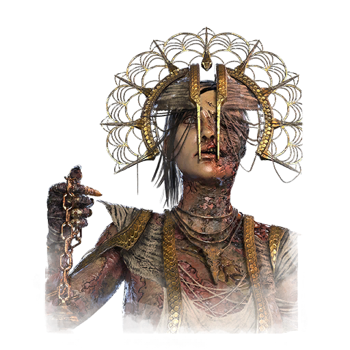
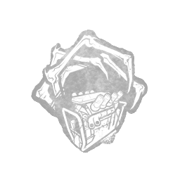
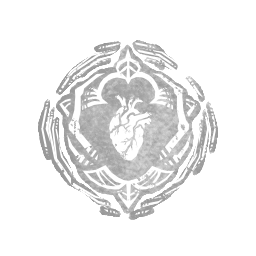
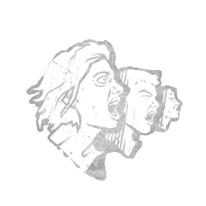

瘟疫 Plague
- 难度
- 3
- 移速
- 4.6
- 恐惧范围
- 32 米
- 能力
- 污秽净化
- 性别
- 女性
- 出身
- Babylonian (Ancient Mesopotamia)
- 演员
- Undisclosed Voice Actress
背景故事
她五岁那年，阿迪里斯——一个七口之家中最年幼的孩子——被遗弃在巴比伦城中央净化神庙那砖红色的灼热台阶上。为了消解自己的震惊与哀恸，她始终抱持着一个信念：诸神对她自有安排。
她的人生从此是一段安静的奴役。她照料园圃，准备祭祀餐食，打磨祭祀用的香炉。夜里，她会祈祷，恳求一个昭示她命运的征兆。及笄之年，她开始侍奉高阶祭司，参与每年敬奉海羊神——水与创造之神的祭祀大典。她在高耸的黑柱大厅里挥动香炉，洒下浓稠的黑烟，那些烟气攀上冰冷高耸的石柱，而后缓缓消散。她的忧虑随之消散，而那份随之而来的欢愉，让她感到自己前所未有地贴近诸神。
此后的每一天，她都把自己累到骨瘦如柴，在完成自身职责的同时接过新的差事，协助祭司们举行净化仪式。祭司们对帮手的需要越来越殷切。高墙之外，灾祸般的瘟疫再度抬头，净化仪式不得不日日举行，以回应墙外的祈求。数月之内，祭司们纷纷染病。没过多久，他们便虚弱得再也主持不了任何仪式。阿迪里斯参与过许多场净化仪式，成了唯一还能继续撑下去的人。蔓延的恐慌必须被遏制，哪怕主持者只是个初出茅庐的见习者。
第一次主持仪式前，阿迪里斯满心焦虑——
专属技能

腐败干预
Corrupt Intervention

黑暗忠诚
Dark Devotion

传染性恐惧
Infectious Fright
通用技能 任意杀手均可使用
苦涩低语
Bitter Murmur
淘汰弱者
Cull the Weak
捕鹿人
Deerstalker
煎熬
Distressing
咒术：命运愚者
Hex: Fortune's Fool
咒术：无人幸免于死
Hex: No One Escapes Death
咒术：狩猎快感
Hex: Thrill of the Hunt
黑暗中
In the Dark
隐秘
Insidious
铁掌
Iron Grasp
让他们等着
Keep Them Waiting
毫无保留
No Holds Barred
血狱钩：怪诞圣地
Scourge Hook: Monstrous Shrine
血狱钩：泣血之伤
Scourge Hook: Weeping Wounds
看他们逃窜
See How They Run
破碎希望
Shattered Hope
邋遢屠夫
Sloppy Butcher
暗影间谍
Spies from the Shadows
表现失常
Underperform
不依不饶
Unrelenting
耳语
Whispers
附加品
- 精贵 灰烬苹果 Ashen Apple
- 活动 黑香 Black Incense
- 罕见 受祝福的苹果 Blessed Apple
- 传说 信徒护符 Devotee's Amulet
- 罕见 催吐药水 Emetic Potion
- 精贵 驱魔护符 Exorcism Amulet
- 罕见 赤铁矿印章 Haematite Seal
- 稀有 治疗药膏 Healing Salve
- 精贵 焚香药膏 Incensed Ointment
- 精贵 感染催吐剂 Infected Emetic
- 活动 虹彩印章 Iridescent Seal
- 稀有 石灰岩印章 Limestone Seal
- 稀有 乳香 Olibanum Incense
- 罕见 强效酊剂 Potent Tincture
- 稀有 祈祷碑残片 Prayer Tablet Fragment
- 罕见 预防护符 Prophylactic Amulet
- 精贵 按摩油 Rubbing Oil
- 传说 断趾 Severed Toe
- 传说 污秽催吐剂 Vile Emetic
- 传说 崇拜碑 Worship Tablet